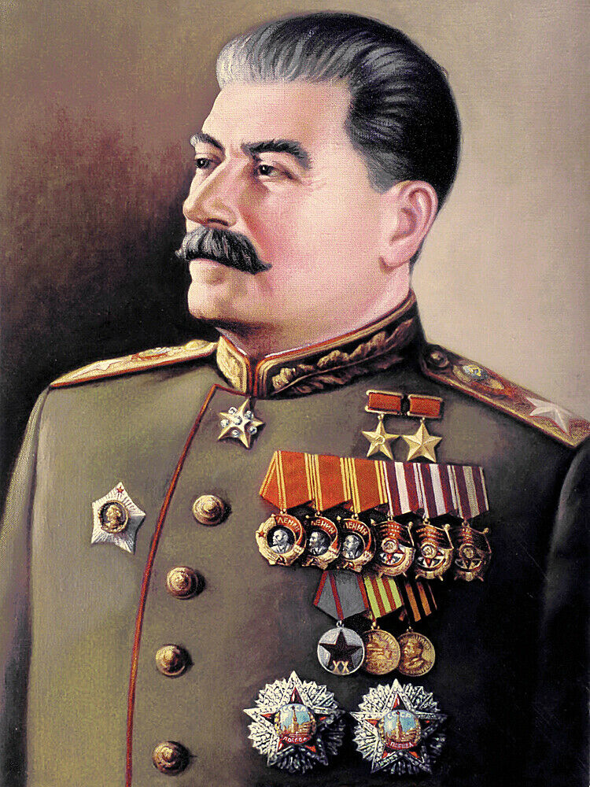

Il Manifesto Stalinista
 Search
Search
Search
Search
Parole che usa molto:
-"Patria"
-"Esercito rosso"
Occorre, innanzi a tutto, che i nostri uomini, gli uomini sovietici, comprendano tutta la gravità del pericolo che minaccia
il nostro paese e pongano fine alla faciloneria, alla noncuranza, allo stato d’animo proprio del periodo dell'edificazione
pacifica, completamente comprensibili prima della guerra, ma funesti nel momento attuale in cui la guerra ha radicalmente
cambiato la situazione. Il nemico è feroce e implacabile. Esso si pone lo scopo di conquistare le nostre terre bagnate dal
nostro sudore, di impossessarsi del nostro grano e del nostro petrolio, frutti del nostro lavoro. Esso si pone lo scopo di
restaurare il potere dei proprietari terrieri, di restaurare lo zarismo, di distruggere la cultura nazionale e
l'organizzazione statale nazionale dei russi, degli ucraini, dei bielorussi, dei lituani, dei lettoni, degli estoni,
degli usbechi, dei tartari, dei moldavi, dei georgiani, degli armeni, degli azerbaigiani e degli altri liberi popoli
dell'Unione Sovietica, di germanizzarli, di renderli schiavi dei prìncipi e dei baroni tedeschi. Si tratta, dunque,
della vita o della morte dello Stato sovietico, della vita o della morte dei popoli dell'U.R.S.S., si tratta, per i
popoli dell'Unione Sovietica di essere liberi, o di cadere nella servitù. Bisogna che gli uomini sovietici comprendano
ciò e cessino di essere spensierati, mobilitino sé stessi e riorganizzino tutto il loro lavoro in modo nuovo, su piede
di guerra, senza mercé per il nemico.
Occorre, inoltre, che nelle nostre file non vi sia posto per i piagnucoloni ed i codardi, per gli allarmisti e i disertori,
che i nostri uomini non conoscano la paura nella lotta e vadano con abnegazione alla nostra guerra liberatrice per la difesa
della Patria, contro gli schiavisti fascisti. Il grande Lenin, che ha creato il nostro Stato, diceva che la qualità
fondamentale degli uomini sovietici deve essere il coraggio, l'ardimento, l'intrepidezza nella lotta, la decisione di
combattere insieme al popolo contro i nemici della nostra Patria. Occorre che questa mirabile qualità del bolscevico diventi
patrimonio dei milioni e milioni di uomini dell'Esercito rosso, della nostra Marina rossa e di tutti i popoli
dell'Unione Sovietica.
Lui cercava di utilizzare dei termini tipo compari fratelli per instaura un rapporto personale e intimo con il popolo.